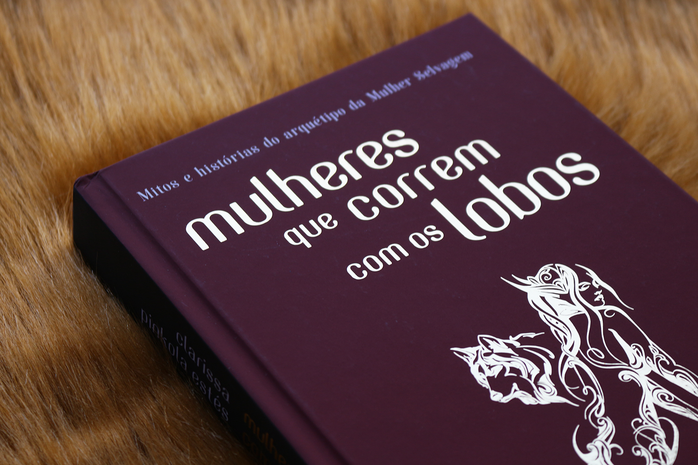

Sobre o livro
Medo, depressão, fragilidade, bloqueio e falta de criatividade são sintomas cada vez mais frequentes entre as mulheres modernas, assoberbadas com o acúmulo de funções na família e na vida profissional. Esse problema, no entanto, não é recente, acredita a psicóloga junguiana Clarissa Pinkola Estés. Ele veio junto com o desenvolvimento de uma cultura que transformou a mulher numa espécie de animal doméstico. Mulheres que correm com os lobos identifica a essência da alma feminina, sua psique instintiva mais profunda, com o arquétipo da mulher selvagem, e propõe o resgate desse passado longíquo, como forma de atingir verdadeira libertação.

Sobre a autora
(Indiana, 27 de janeiro de 1945) é uma psicóloga Junguiana, poeta e escritora norte-americana especializada em traumas pós-guerra. Ficou mundialmente conhecida por seu livro de 1992, Mulheres que correm com os lobos: mitos e histórias do arquétipo da mulher selvagem, onde aborda o arquétipo feminino, seus mistérios e potência com base em mitos, histórias ancestrais e contos.
Convivendo com imigrantes desde tenra infância, Clarissa teve acesso a muitas histórias, lendas e mitos de outros povos, contatos e recontados por parentes e pelos pais adotivos. Depois de terminar o ensino médio, Clarissa se mudou para o Colorado. Casou-se pela primeira vez em 1967, divorciando-se em 1974. A união resultou em três filhas, que ficaram sob a sua custódia.